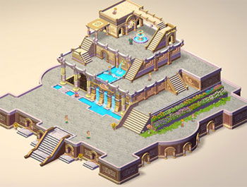
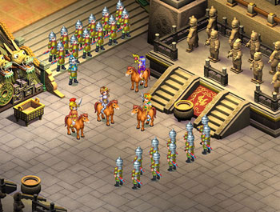
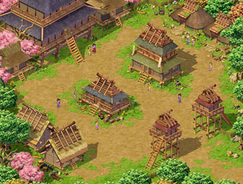

3.0资料片-冒险新区
| ● 希腊城邦：
希腊城邦原先是由几个部落，而后才慢慢凝聚成一个国家。长久以来他们贡奉着众诸神及阿西娜女神的神殿，因此宗教味道相当浓厚。当地的居民相信只要诚心的祈祷，日子就能够一帆风顺，也因如此，当地的农作物年年都是丰收，也从未经历过很大的灾难。也因为希腊人民一直相信着他们受到女战神阿西娜庇护的缘故，使得其它有野心的国家不敢来犯，怕的就是因为冒犯了神而遭受到天谴。 | |||||
| |||||
| ● 空中花园：
传说空中花园是一位巴比伦王为了取悦王妃而建造，这里美的会让人忘了自己到此的目的。因为高贵的神�o爱上了美若天仙的王妃，于是便强行夺走了王妃，自此之后巴比伦王憎恨神�o，园内随处可见亵渎神的图案与文字，巴比伦王绝没想到，当初为了取悦王妃而建的空中花园，现在只剩自己一人面对这美丽而空荡的皇宫，触景伤情。 | |||||
|
 | |||||
|
| |||||
| ● 秦皇陵： | |||||
| 位于长安城东五公里处，被断定为中国最大最早的一座帝王陵的就是秦始皇陵，据说当年项羽入关后一把火，烧毁了秦陵的秦宫室苑囿，现在秦陵地面上除了仍存留的封土堆外，大部份建筑只剩下大片的劣土和瓦砾了，直到三座坑的兵马俑出土现世后，秦皇陵地宫的神秘更是令世人啧啧称奇，秦陵的地下到底还有些什么东西，一直是人们心目中的谜。 | |||||
|
 | |||||
| ● 邪马台国： | |||||
| 邪马台国的时代为日本历史中的弥生时代末期，2世纪末，日本有许多小国分立，邪马台国是统治这些小国的强大国家，女王卑弥呼统率周围的奴国和伊都国等许多小国。其最有权势及声望的卑弥呼可能是基于母系社会的传统而被族人推为掌握政治与宗教大权的领袖，凭借着本身的宗教号召力统合族内各部落称霸一方。 | |||||
|
 |